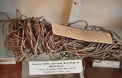
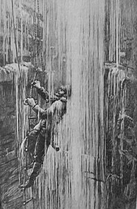
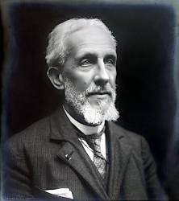

Edouard Alfred Martel
*1859-✝1938



Edouard Alfred Martel is the father of modern speleology, and famous until today in France. In other countries he is not known, probably because his books were never translated in other languages. He was the first one, who explored caves with a scientific interest. Speleology didn’t exist at this time, and he had no geological background. He felt more like a Geographer, discovering new territory underground.
Martel was a lawyer, but he didn’t like his profession very much. So he used the first possibility to become the first full time caver of history. He bought the Gouffre de Padirac and made it a show cave.
Martel organized his cave tours in campaigns that looked like Himalaya expeditions. Many locals were paid to haul heavy equipment. The tours were made by Martel, his friend Lucien Rudaux who made paintings of the expedition, and the blacksmith Louis Armand who was responsible for most of the equipment.
Between 1888 and 1914, Martel organized annual campaigns all over Europe. Some highlights were:
| 27-JUN-1888 | Exploration of the underground river of the Abîme de Bramabiau. Martel made the first through-crossing of the plateau de Camprieu in Southern France. This is often called the birthday of Speleology. |
| 1889 | He descended 100 meters into the Gouffre de Padirac. Martel and his cousin Gaupillat discovered an underground stream and followed it for 2 km in a dingi. |
| 1895 | He travelled to Ireland and England, exploring Marble Arch Cave in Northern Ireland and Gaping Ghyll in Yorkshire. |
| 1896 | Martel and Louis Armand explored caves on Mallorca, e.g. Cuevas del Drach. They were invited by the Archduke Ludwig Salvator, who lived in Miramar. |
| 1897 | At the end of an unsuccessful campaign into Les Causses, Louis Armand persuaded Martel to visit a last aven. He discovered a huge chamber with huge Stalagmites. The cave was named Aven Armand after its discoverer. It was later developed as a show cave by an association, but Armand was already 5 years dead, when the cave was finally opened to the public in 1927. |
| 1902 | The Loi Martel is the first nature protection law which includes the protection of groundwater and caves. |
| 1905 | Martel makes the first through trip through the Gorges du Verdon. Although this is not a cave, the tour was very similar to exploring a water cave. Today a trail through the canyon is named after Martel. |
Martel is also famous for a nature protection law which is thus called Loi Martel. The following box is the description of this event in his own words. He was very ambitious and soon succeeded in having karst areas included in French legislation as water protection areas. Article 28 was introduced into the law relating to public health on 15-FEB-1902, prohibited the throwing of animal carcasses and putrescible waste into caves. The Loi Martel (Martel Law) was the first nature protection law when it was issued in 1902.
1° Connaître quels sont, dans les régions calcaires de France, les puits naturels susceptibles de communiquer plus ou moins directement avec les eaux souterraines qui alimentent les sources ;
2° Interdire, soit administrativement, soit par des dispositions légales nouvelles, le jet des immondices et des bêtes mortes dans les gouffres où une communication aura été reconnue.
Pratiquement, on pourrait voûter ceux dont l’orifice est étroit et entourer de clôtures ceux qui sont trop largement ouverts. Accessoirement même, on évitera encore de cette manière :
1° les accidents fréquents qui résultent des chutes fortuites de bestiaux ou de personnes dans ces trous souvent béants au milieu des champs ;
2° l’essaimage des mouches et insectes venimeux que la présence des carcasses attire au fond" et aux abords des abîmes.
On 14 July 1891, we came across the half-rotten carcass of a calf right in the middle of an underground stream, in the Berrie chasm near Cahors, which is 34 metres deep. A few hours after exploring this abyss, and without giving a second thought to what we had just discovered, we quenched our thirst at the nearby Graudenc spring, which undoubtedly connects (as the crow flies: 250 to 300 metres) with the underground stream of the Berrie (which can only be followed for a few metres beneath the overly low vaults at the bottom of the chasm). Two or three days later, G. Gaupillat and I were struck by a sort of ptomaic poisoning, which left us feeling very unwell for several weeks. This unintended experiment was convincing. It is clear that this potential source of contamination of springs in limestone regions is a matter of public health; consequently, it seems appropriate to make the following two recommendations:
1° To identify, in the limestone regions of France, the natural wells likely to communicate more or less directly with the groundwater that feeds the springs;
2° To prohibit, either administratively or through new legislation, the disposal of refuse and dead animals into the chasms where such a connection has been identified.
In practical terms, those with narrow openings could be vaulted over, and those that are too wide open could be fenced off. Incidentally, this measure would also help to prevent:
1° the frequent accidents resulting from livestock or people accidentally falling into these holes, which are often gaping in the middle of fields;
2° the swarming of flies and poisonous insects attracted by the presence of carcasses at the bottom and around the edges of the chasms.
Bibiography
- Édouard Alfred Martel (1890): Les Cevennes et la région des Causses , Librairie Charles Delagrave, Paris, 400 pp. amazon amazon
- Édouard Alfred Martel (1894): Les Abîmes, les eaux souterraines, le cavernes, les sources, la spéléologie, Librairie Charles Delagrave, Paris, 578 pp. (Laffitte Reprints, Marseille 1996). online amazon
- Édouard Alfred Martel, A. Lorria (1895): Le Massif de la Bernina, Verlag Orell, Zürich, 200 pp.
- Édouard Alfred Martel (1897): Irlande et Cavernes anglaises, Librairie Charles Delagrave, Paris, 400 pp.
- Édouard Alfred Martel (1899): Le Trayas et L’Esterel, Librairie Charles Delagrave, Paris, 80 pp.
- Édouard Alfred Martel (1900): La Speleologie, Librairie Carre et Naud, Paris, 125 pp.
- Édouard Alfred Martel (1901): Le Gouffre de Padirac, Librairie Charles Delagrave, Paris, 180 pp. amazon
- Édouard Alfred Martel (1903): La Photographie Souterraine, Librairie Gauthier-Villars, Paris, 70 pp.
- Édouard Alfred Martel (1905): La Speleologie aux XXe Siecle, Librairie Hermann, Paris, 810 pp.
- Édouard Alfred Martel, Luis de Launay, Ed. Bonjean, J. Título Ogier (1906): Le sol et l’eau - Traité d’hygiène, Librairie Baillere Paris, 486 pp.
- Édouard Alfred Martel (1908): L’Evolution Souterraine, Librairie Flammarion, Paris, 388 pp.
- Édouard Alfred Martel (1909): La Côte d’Azur Russe, Librairie Charles Delagrave, Paris, 423 pp.
- Édouard Alfred Martel, E. Van den Broeck, E. Rahir (1910): Cavernes et Eaux Souterraines de la Belgique, Librairie Lamertin, Bruxelles, 1800 pp.
- Édouard Alfred Martel (1921): Nouveau Traite des Eaux Souterraines, Librairie Doin, Paris, 840 pp.
- Édouard Alfred Martel (1926): Causses et Gorges du Tarn, Librairie Artieres et Maury, Millau, 512 pp.
- Édouard Alfred Martel (1927): L’Aven Armand, Librairie Artieres et Maury, Millau, 48 pp.
- Édouard Alfred Martel (1930): La France Ignoree, 2 Bände, Librairie Charles Delagrave, Paris, 600 pp.
- Édouard Alfred Martel (1936): Les Grands Causses, Librairie Artieres et Maury, Millau, 510 pp.
Literature
- Norbert Casteret (1943): Édouard-Alfred Martel: Explorateur du monde souterrain, Gallimard (réédition numérique FeniXX), 270 pp. amazon
 Search DuckDuckGo for "Édouard Alfred Martel"
Search DuckDuckGo for "Édouard Alfred Martel" Édouard-Alfred Martel - Wikipedia (visited: 20-SEP-2014)
Édouard-Alfred Martel - Wikipedia (visited: 20-SEP-2014) E.A.MARTEL 1859-1938 by Bernd Kliebhan (visited: 27-MAR-2025)
E.A.MARTEL 1859-1938 by Bernd Kliebhan (visited: 27-MAR-2025)
 Index
Index Topics
Topics Hierarchical
Hierarchical Countries
Countries Maps
Maps